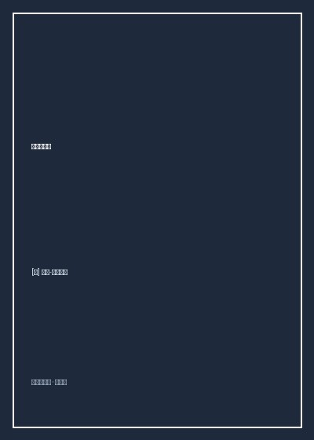

《忧郁的热带》

总体观点
《忧郁的热带》是一部超越传统学术报告的文学与哲学不朽丰碑。开篇一句'我讨厌旅行和探险家'奠定了全书极其高贵的反思基调：列维-斯特劳斯无情鄙视那些将原住民异域风情当作马戏团奇观贩卖的殖民探险家，他视人类学为一场穿透表象偏见、在异文化镜子中自我救赎的严酷苦修。
作者通过对卡都卫欧族、波洛洛族与南比夸拉族社会的微观结构分析，打破了西方中心主义关于'原始野蛮人智力低下'的傲慢偏见。他证明土著部落的环形村落布局、面部彩绘与亲属互惠交换，展现出丝毫不亚于现代高等数学与哲学的复杂二元对称秩序，原始思维具有极其深邃的结构理性。
全书贯穿着一种永恒的'热带忧郁'：当西方工业文明带着推土机、传染病与机械商品粗暴侵入热带雨林时，那些曾经璀璨纯净的人类多样性生活方式正在被不可逆转地碾碎为千篇一律的废墟。人类学者注定是一个悲剧性的迟到见证者，在文明的废墟旁为人类失去的童年唱响挽歌。
核心观点
-
1. 反叛虚伪的探险神话：人类学作为一种良知苦修
旅行从来不是浪漫的猎奇消费，探险家带回的照片往往遮蔽了西方殖民侵略对当地生态与土著人口的毁灭性屠戮与疾病传播。
作者冷眼讽刺巴黎沙龙里贵妇们听探险家夸大雨林食人族猎奇故事的虚荣场面，呼吁用严谨的人类学田野打破文化优越感。 -
2. 卡都卫欧族的面部彩绘：分裂社会在艺术中的几何救赎
女性在面部绘制极其复杂的非对称几何图案，本质上是在用艺术的扭曲对称，试图在精神上调和部落内部严格等级与自由婚配之间的剧烈撕裂。
分析土著贵妇脸上用红黑颜料绘制的交错螺旋纹样，展示艺术形式如何成为解决现实社会矛盾的潜意识符号武器。 -
3. 波洛洛族的环形村落：二元对立的宇宙微缩模型
村庄划分为南北两半族，跨半族通婚与葬礼互助构成了永恒的互惠流动，物理空间布局直接外化了神话宇宙观。
天主教传教士为了摧毁土著异教信仰，将环形村落强行推平成两条直线平行街道，土著瞬间丧失空间方位感与社会结构彻底瓦解。 -
4. 书写的危险礼物：文字作为权力支配与压迫的帮凶
在无文字的南比夸拉部落中，酋长模仿人类学者在纸上划杠假装读信，文字的出现从第一天起就不是为了记录真理而是为了确立特权与奴役。
酋长在部众面前拿着白纸胡乱画线装作宣读命令分发物资，展示书写符号如何在毫无文字经验的纯朴群体中催生出初级政治欺诈。 -
5. 文明的熵增与告别：给人类世界的一瞥温柔凝望
现代文明像一台巨大的机器不断将秩序转化为排泄物与垃圾，在万物归于热寂之前，珍惜哪怕一粒矿石的光彩与微风拂面的清凉。
全书结尾列维-斯特劳斯在黄昏中凝望一朵含苞待放的野花，写下对生命短暂相聚的崇高释怀：'原谅我们曾经的盲目，抓紧这片刻的宁静'。
全书结构
-
第一部至第二部 结束旅行与航向热带：告别欧洲的知识分子自省
青年列维-斯特劳斯回忆离开法西斯阴云密布的法国前往巴西圣保罗大学任教的航程，反思西方学院哲学的闭门造车与空洞抽象。
在海船甲板上连续数日观察大西洋日落云层的宏大变幻，用长达数页的优美散文详细记录光影色谱，奠定全书现象学白描风格。 -
第三部至第四部 安第斯与巴西内陆：踏上红土地的荒野远征
组建考察队深入巴西内陆马托格罗索荒原，记录早期金矿拓荒者的狂热与衰退，展现蛮荒自然对人类心智的剧烈重塑。
穿越蚊虫肆虐的灌木丛，骡马陷在泥沼中动弹不得，考察队员在疟疾高烧中直面未经驯化的热带大自然的冷酷威严。 -
第五部至第六部 卡都卫欧与波洛洛：对称艺术与环形宇宙观
深入两大印第安部落，细致记录物质文化遗产，首次系统阐发结构人类学关于亲属制度、二元对立与艺术造型同构的核心假说。
记录波洛洛族壮观的拔羽毛仪式与鹦鹉羽毛头冠制作工艺，展现土著社会将动物灵性无缝融入社会仪式的高超智慧。 -
第七部至第八部 南比夸拉与图皮：赤贫丛林中的柔情与权力的诞生
走访几乎赤身裸体、没有固定居所的南比夸拉流浪部落，见证贫困极端下夫妻儿女之间令人动容的深情依偎与'文字的教训'。
夜幕降临时，没有衣物御寒的土著家庭在沙地上挖一个小坑点燃微弱篝火，全家人赤身紧紧拥抱在一起相互取暖入睡的震撼画面。 -
第九部 归途与沉思：伊斯兰的教训、佛教的静穆与给人类的告白
全书哲思巅峰，作者从美洲热带返程，途经印度加尔各答，对比基督教、伊斯兰教与佛教文明，反思现代性的毁灭终局。
在缅甸佛寺的静谧钟声中，作者悟出人类存在的最终真谛——摆脱贪欲执念，以慈悲之心对待万物，在短暂时间里守护爱意。